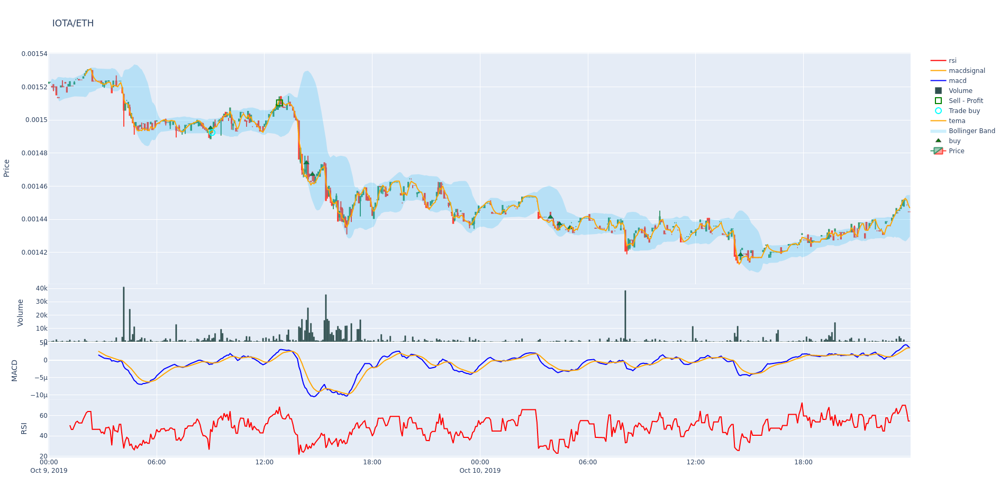
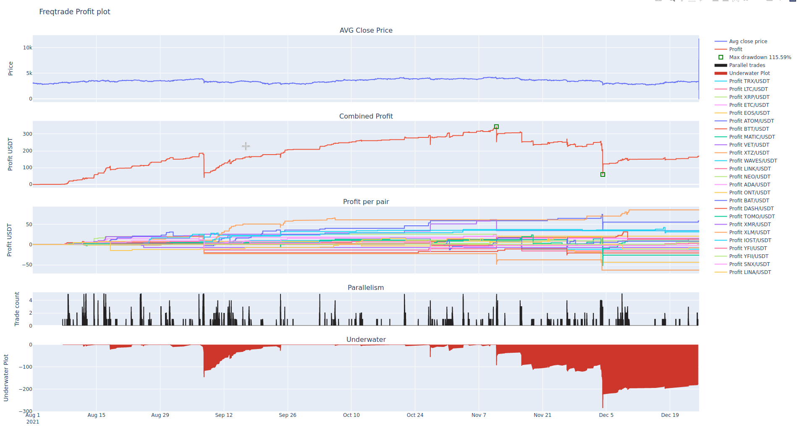

绘图¶
本页面将说明如何绘制价格、指标和利润。
已废弃
本页面介绍的命令（plot-dataframe、plot-profit）应视为已废弃，并处于维护状态。
主要原因在于它们在性能方面存在问题，即使中等规模的图表也可能导致性能下降；另外，“存储文件后在浏览器中打开”从用户界面角度来说也不够直观。
目前没有立即删除的计划，但它们不再积极维护——如果需要重大改变以确保其正常运行，可能会在短期内将其移除。
建议使用 FreqUI 来满足绘图需求，后者不会遇到相同的性能问题。
安装 / 设置¶
绘图模块使用 Plotly 库。你可以通过运行以下命令进行安装或升级：
pip install -U -r requirements-plot.txt
绘制价格和指标¶
freqtrade plot-dataframe 子命令显示一个带有三个子图的交互式图表：
- 主要图表，显示蜡烛图和跟随价格的指标（如 sma/ema）
- 成交量柱状图
- 由
--indicators2指定的其他指标

可能的参数：
用法：freqtrade plot-dataframe [-h] [-v] [--no-color] [--logfile FILE] [-V] [-c PATH] [-d PATH] [--userdir PATH] [-s NAME] [--strategy-path PATH] [--recursive-strategy-search] [--freqaimodel NAME] [--freqaimodel-path PATH] [-p PAIRS [PAIRS ...]] [--indicators1 INDICATORS1 [INDICATORS1 ...]] [--indicators2 INDICATORS2 [INDICATORS2 ...]] [--plot-limit INT] [--db-url PATH] [--trade-source {DB,file}] [--export {none,trades,signals}] [--export-filename PATH] [--timerange TIMERANGE] [-i TIMEFRAME] [--no-trades]
参数选项：
-h, --help 显示帮助信息并退出
-p PAIRS [PAIRS ...], --pairs PAIRS [PAIRS ...]
将命令限制在这些交易对。交易对用空格分隔。
--indicators1 INDICATORS1 [INDICATORS1 ...]
设置策略中希望在第一行显示的指标。用空格分隔的列表。示例：
ema3 ema5。默认值：['sma', 'ema3', 'ema5']。
--indicators2 INDICATORS2 [INDICATORS2 ...]
设置策略中希望在第三行显示的指标。用空格分隔的列表。示例：
fastd fastk。默认值：['macd', 'macdsignal']。
--plot-limit INT 指定绘图的最大刻度数。注意：数值过大会生成巨大的文件。默认值：750。
--db-url PATH 覆盖交易数据库的URL。这在自定义部署中非常有用（默认：sqlite:///tradesv3.sqlite为实时运行模式，sqlite:///tradesv3.dryrun.sqlite为模拟交易）。
--trade-source {DB,file}
指定交易数据来源（可以是数据库或文件（回测文件））。默认：file
--export {none,trades,signals}
导出回测结果（默认：trades）。
--export-filename PATH, --backtest-filename PATH
使用此文件名保存回测结果。需同时设置--export。示例：--export-filename=user_data/backtest_results/backtest_today.json
--timerange TIMERANGE
指定使用的数据时间范围。
-i TIMEFRAME, --timeframe TIMEFRAME
指定时间框架（1m、5m、30m、1h、1d）。
--no-trades 跳过使用回测文件和数据库中的交易数据。
常用参数：
-v, --verbose 显示详细信息（-vv获得更多信息，-vvv显示所有信息）。
--no-color 禁用高亮结果的颜色化。如果将输出重定向到文件，可能会很有用。
--logfile FILE, --log-file FILE
将日志写入指定文件。特殊值包括：
'syslog'、'journald'。详情请参考文档。
-V, --version 显示程序版本号并退出
-c PATH, --config PATH
指定配置文件（默认：userdir/config.json或存在的config.json）。可以使用多个--config选项。也可以设置为-，从标准输入读取配置。
-d PATH, --datadir PATH, --data-dir PATH
指定包含历史回测数据的目录路径。
--userdir PATH, --user-data-dir PATH
指定用户数据目录路径。
策略相关参数： -s NAME, --strategy NAME 指定将由机器人使用的策略类名。 --strategy-path PATH 指定额外的策略查找路径。 --recursive-strategy-search 在策略文件夹中递归搜索策略。 --freqaimodel NAME 指定自定义的频率模型。 --freqaimodel-path PATH 指定额外的频率模型查找路径。
示例：
freqtrade plot-dataframe -p BTC/ETH --strategy AwesomeStrategy
-p/--pairs 参数可用来指定你希望绘制的交易对。
Note
freqtrade plot-dataframe 子命令会为每个交易对生成一个图表文件。
可以自定义指标。
使用 --indicators1 表示主图中的指标，使用 --indicators2 表示位于下方子图（如果值范围与价格不同）。
freqtrade plot-dataframe --strategy AwesomeStrategy -p BTC/ETH --indicators1 sma ema --indicators2 macd
更多用例示例¶
绘制多个交易对，用空格分隔：
freqtrade plot-dataframe --strategy AwesomeStrategy -p BTC/ETH XRP/ETH
缩放特定时间段（放大区间）：
freqtrade plot-dataframe --strategy AwesomeStrategy -p BTC/ETH --timerange=20180801-20180805
如果你想绘制存储在数据库中的交易，可以结合 --db-url 和 --trade-source DB 使用：
freqtrade plot-dataframe --strategy AwesomeStrategy --db-url sqlite:///tradesv3.dry_run.sqlite -p BTC/ETH --trade-source DB
要绘制回测结果中的交易，用 --export-filename <文件名> 指定导出文件名：
freqtrade plot-dataframe --strategy AwesomeStrategy --export-filename user_data/backtest_results/backtest-result.json -p BTC/ETH
绘制数据框基础¶

plot-dataframe 子命令需要提供回测数据、策略以及一个包含对应交易的回测结果文件或数据库。
生成的图表包括：
- 绿色三角：策略发出的买入信号。（注意：并非每个买入信号都会实际进行交易，参考青色圆圈。）
- 红色三角：策略发出的卖出信号。（同样，非每个卖出信号都终止一笔交易，参考红色和绿色方块。）
- 青色圆圈：交易入场点。
- 红色方块：亏损或利润为0%的交易退出点。
- 绿色方块：盈利交易的退出点。
- 以蜡烛图比例显示的指标（如 SMA/EMA），由
--indicators1指定。 - 成交量（主图底部的柱状图）。
- 以不同尺度（如 MACD、RSI）显示的指标，位于成交量柱下方，由
--indicators2指定。
布林带
如果存在列 bb_lowerband 和 bb_upperband，则会自动在图中添加布林带，表现为从下轨到上轨的淡蓝色区域。
高级图表配置¶
可以在策略中通过 plot_config 参数指定高级图表配置。
使用 plot_config 时的额外功能包括：
- 指定每个指标的颜色
- 指定额外的子图（子图）
- 指定指标对以填充中间区域
下面的示例配置为指标指定了固定颜色。否则，每次绘制可能会生成不同的配色方案，影响对比。 它还支持同时显示多个子图，例如同时显示 MACD 和 RSI。
图表类型可以通过 type 关键字配置。常用类型包括：
scatter对应plotly.graph_objects.Scatter（默认）bar对应plotly.graph_objects.Bar
其他参数可在 plotly 字典中指定，用于传递给 plotly.graph_objects.* 的构造函数。
以下是带有内联注释的示例配置，说明过程：
@property
def plot_config(self):
"""
构建返回字典的方法有多种方案。
唯一重要的是返回值。
例子：
plot_config = {'main_plot': {}, 'subplots': {}}
"""
plot_config = {}
# 主要图表的配置
plot_config['main_plot'] = {
# 主要指标的配置
# 预设参数：emashort 和 emalong
f'ema_{self.emashort.value}': {'color': 'red'},
f'ema_{self.emalong.value}': {'color': '#CCCCCC'},
# 省略 color 时会自动随机选取颜色。
'sar': {},
# 填充 senkou_a 和 senkou_b 之间的区域
'senkou_a': {
'color': 'green', # 可选
'fill_to': 'senkou_b',
'fill_label': 'Ichimoku Cloud', # 可选
'fill_color': 'rgba(255,76,46,0.2)', # 可选
},
# 也绘制 senkou_b，不只填充区域
'senkou_b': {}
}
# 子图配置
plot_config['subplots'] = {
# 创建 MACD 子图
"MACD": {
'macd': {'color': 'blue', 'fill_to': 'macdhist'},
'macdsignal': {'color': 'orange'},
'macdhist': {'type': 'bar', 'plotly': {'opacity': 0.9}}
},
# 额外的 RSI 子图
"RSI": {
'rsi': {'color': 'red'}
}
}
return plot_config
作为属性（以前的方法）
也可以将 plot_config 作为属性（这是以前的默认方法）。
但缺点是策略参数无法被访问，导致某些配置无法正常工作。
plot_config = {
'main_plot': {
# 主要指标的配置
# 设定 `ema10` 为红色，`ema50` 为灰色
'ema10': {'color': 'red'},
'ema50': {'color': '#CCCCCC'},
# 省略 color 时自动随机
'sar': {},
# 填充 senkou_a 和 senkou_b 之间的区域
'senkou_a': {
'color': 'green', #可选
'fill_to': 'senkou_b',
'fill_label': 'Ichimoku Cloud', #可选
'fill_color': 'rgba(255,76,46,0.2)', #可选
},
# 也绘制 senkou_b，不只区间
'senkou_b': {}
},
'subplots': {
# 创建 MACD 子图
"MACD": {
'macd': {'color': 'blue', 'fill_to': 'macdhist'},
'macdsignal': {'color': 'orange'},
'macdhist': {'type': 'bar', 'plotly': {'opacity': 0.9}}
},
# 额外的 RSI 子图
"RSI": {
'rsi': {'color': 'red'}
}
}
}
Note
以上配置假设 ema10、ema50、senkou_a、senkou_b、
macd、macdsignal、macdhist 和 rsi 都是策略生成的 DataFrame 列。
Warning
plotly 参数仅支持使用 plotly 库时，不能在 freq-ui 中使用。
交易仓位调整
如果启用 position_adjustment_enable / 调用 adjust_trade_position()，那么交易的起始买入价会在多个订单间进行平均，交易开始的价格可能会超出蜡烛图范围。
绘制利润¶

plot-profit 子命令显示一个包含三个子图的交互式图表：
- 所有交易对的平均收盘价
- 回测获得的累计利润（注意：这不是实际利润，更像是估算值）
- 每个单独交易对的利润
- 交易的平行程度
- 最大回撤期间的资金变动（Underwater）
第一个图表帮助你了解整体市场的走势。
第二个图表用来验证你的算法是否有效。
你可以希望算法稳定获利，或者少操作但收益大。
此图还会显示最大回撤的起止时间。
第三个图表有助于识别异常值，即在某些交易对出现利润突增的事件。
第四个图表可以帮助分析交易的平行执行情况，显示最大同时开启的最大仓位数。
freqtrade plot-profit 子命令的可能参数：
用法：freqtrade plot-profit [-h] [-v] [--no-color] [--logfile FILE] [-V] [-c PATH] [-d PATH] [--userdir PATH] [-s NAME] [--strategy-path PATH] [--recursive-strategy-search] [--freqaimodel NAME] [--freqaimodel-path PATH] [-p PAIRS [PAIRS ...]] [--timerange TIMERANGE] [--export {none,trades,signals}] [--export-filename PATH] [--db-url PATH] [--trade-source {DB,file}] [-i TIMEFRAME] [--auto-open]
选项：
-h, --help 显示此帮助信息并退出
-p PAIRS [PAIRS ...], --pairs PAIRS [PAIRS ...]
将命令限制在这些交易对。交易对之间用空格分隔。
--timerange TIMERANGE
指定使用的数据时间范围。
--export {none,trades,signals}
导出回测结果（默认：trades）。
--export-filename PATH, --backtest-filename PATH
使用此文件名保存回测结果。需要同时设置--export。例如：--export-filename=user_data/backtest_results/backtest_today.json
--db-url PATH 覆盖交易日志数据库URL，在自定义部署中非常有用（默认：sqlite:///tradesv3.sqlite 用于实时运行，sqlite:///tradesv3.dryrun.sqlite 用于模拟运行）。
--trade-source {DB,file}
指定交易数据来源（可以是数据库或文件（回测文件））。默认：file
-i TIMEFRAME, --timeframe TIMEFRAME
指定时间周期（1m、5m、30m、1h、1d）。
--auto-open 自动打开生成的图表。
常用参数：
-v, --verbose 详细模式（-vv 获取更多信息，-vvv 获取全部消息）。
--no-color 禁用高亮显示结果的颜色，适合将输出重定向到文件。
--logfile FILE, --log-file FILE
将日志信息写入指定文件。特殊值包括：
'syslog'、'journald'。详细信息请参阅文档。
-V, --version 显示程序版本号并退出
-c PATH, --config PATH
指定配置文件（默认：userdir/config.json 或 config.json ，根据实际存在的文件而定）。可以多次使用此参数。也可以设为-以从标准输入读取配置。
-d PATH, --datadir PATH, --data-dir PATH
指定存放历史回测数据的目录路径。
--userdir PATH, --user-data-dir PATH
指定用户数据目录路径。
策略相关参数： -s NAME, --strategy NAME 指定将被机器人使用的策略类名。 --strategy-path PATH 指定额外的策略查找路径。 --recursive-strategy-search 在策略文件夹中递归搜索策略。 --freqaimodel NAME 指定自定义的频率模型。 --freqaimodel-path PATH 指定额外的频率模型查找路径。
-p/--pairs 参数可用来限制只考虑特定交易对。
示例：
使用自定义回测导出文件：
freqtrade plot-profit -p LTC/BTC --export-filename user_data/backtest_results/backtest-result.json
使用自定义数据库：
freqtrade plot-profit -p LTC/BTC --db-url sqlite:///tradesv3.sqlite --trade-source DB
freqtrade --datadir user_data/data/binance_save/ plot-profit -p LTC/BTC